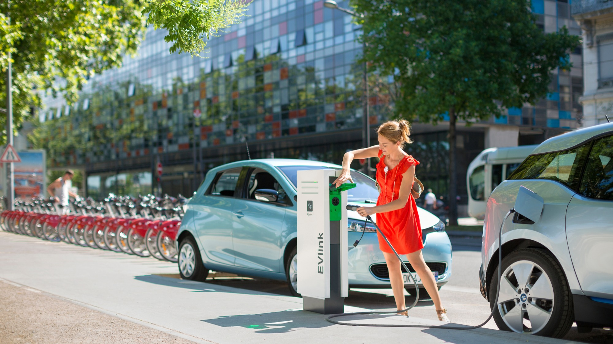
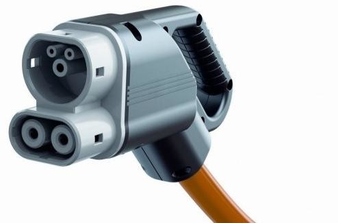
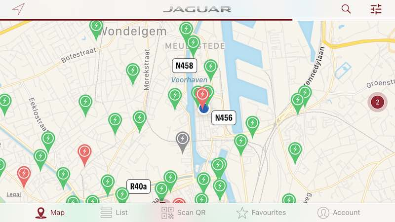

Home - Tags - Charging on the road
When making a longer trip, or staying over somwehere, you will need to charge your car on the road. Luckily, there are many options. But beware: you will use your smartphone a lot!
Fast city chargers
I live in Ghent, and over the years I have noticed that the streets are gradually being equiped with charging stations.
These are typically of the 'fast charger' type, providing 11kW (sometimes even 22kW), are AC powered, 1 or 3 phases.
They have a Type 2 CCS ('mennekes') socket, and you need to use your own charging cable to plug into these.

These chargers are AC, and with my I-Pace (max 7.36kW, 1 phase), I can charge the I-Pac at 30km/hour.
Some companies offer these chargers complementary on their parking lot, which is very convenient, as this allows you to charge cheaply, and make use of the time you are at the company to charge your car.
Rapid chargers
Rapid chargers the ones you need when charging speed is important, like on a longer trip.
Instead of using AC, these are DC, and go from 50kW all the way up to 350kW.
They require special equipment, and are installed mostly next to highways.
There are a couple of companies in Europe that are building a network of these, Fastned in The Netherlands is an important one; also Ionity, a German company with significant coverage Western-European countries.
Some energy companies like Shell (New Motion) and Total are offering rapid chargers in their petrol stations.
A 50kW DC charger uses the Type2 Combo connection, and the cable is attached to the machine, so not to be used with your own cable.

These rapid DC chargers are a lot more efficient:
- 50kW means a full charge in 1 hour 48 minutes; charging at 195 km/hour (!)
- 100kW means a full charge in 55 min; charging at 400 km/hour
These go all the way up to 350kW, which is very fast.
But again here technical limitations for the I-Pace; max DC charge speed is around 100kW.
So I can take advantage of up to 100kW rapid chargers, linking up the a higher speed one, will just truncate to 100kW.
These rapid chargers are of course a real game changer, making it possible to travel long distances with an EV.
Again, in practice a charge is never from 0% to 100%, but more from 20% to 90% or so, and with a rapid 100kW charger my I-Pace would be ready to go after a 40 minute stop.
Finding a charger
Locating a charger is easy when you have a smarphone with the correct apps intalled.
The I-Pace comes with a Jaguar branded version of the popula 'Plugsurfing' app.

This app is a real life save; it gives a view on all the public chargers that are available, what type of connector they have, if they are busy or not, price of charging, etc...
I used it fairly extensively the last couple of weeks, and it works great.
I must have used more than 5 different city charging locations, and they all work without a hitch.
The I-Pace also has a list of charging stations in it's satnav, and there are many other apps: Chargemap, Smoov, etc...
Two weeks ago I was in the south of my native Belgium for a holiday, and there I used the rapid charger next to the E411 in Wanlin, which worked great to quickly add a couple of kilometers of range very quickly.
Paying for a charge
Paying for a charge is done by using a 'charging card'; this is a card (or token) with an RFID that identifies you to the charger, and makes sure that the invoice is sent to the correct person.
I received 2 tokens from Jaguar, which are rebranded Plugsurfing tokens, and they work flawlessly.
I also ordered another card (Chargemap), as I want to be prepared in case one of the payments methods would not work.
All in all this is working a lot better that I feared; there is some getting used to, and charging and planning your trip with an ev is definetly a change in habit, but it works and for now I am enjoying it.
To help plan a longer trip with an ev there is some cool software around, and in my next post I am going to review that.
Tags: ev ndr
Links: Permalink -
Previous: Charging at home
© 2021-01-02, Nick De Roeck. All rights reserved.